Answers to the odd-numbered exercises appear in Appendix B.
Review Your Knowledge
9.01 The independent-samples t test is used to compare means of two _______ samples; the _______ is used to compare means of two dependent samples.
9.02 The cases in the two samples in a paired-samples t test may be paired because they are the same cases measured at two different points in _______ or under two different conditions.
317
9.03 With matched samples, cases are paired together in order to control for _______ variables.
9.04 Two other names for a paired-samples t test are _______ and _______.
9.05 An advantage of a paired-samples t test is that it controls for _______.
9.06 An individual difference is an attribute, such as intelligence or weight, that varies from _______.
9.07 Paired-samples t tests are more powerful statistically. This means they have a _______ probability of being able to reject the null hypothesis if the null hypothesis was false.
9.08 Paired-samples t tests are good to use when _______ are hard to come by.
9.09 Paired-samples t tests can be used to determine if a difference between two sample means is statistically significant, or if it could be explained by _______.
9.10 If the random samples assumption for a paired-samples t test is not violated, the results can be _______ to the population.
9.11 The independence assumption for a paired-samples t test refers to independence _______ a sample, not _______ samples.
9.12 The normality assumption for a paired-samples t test refers to the _______ being normally distributed.
9.13 The hypotheses for a paired-samples t test are statements about the two _______, not the two _______.
9.14 The null hypothesis for a nondirectional paired-samples t test says there is _______ between population means.
9.15 The alternative hypothesis for a two-tailed, paired-samples t test says that the difference between population means could be positive or _______, large or _______.
9.16 The decision rule for a paired-samples t test compares the _______ value of t to the _______ value of t.
9.17 The degrees of freedom for a paired-samples t test are calculated by subtracting _______ from the number of pairs.
9.18 The default option for a paired-samples t test is to set alpha at _______ and to do a _______-tailed test.
9.19 The abbreviation for the standard error of the mean difference scores in a paired-samples t test is _______.
9.20 The value of the test statistic for a paired-samples t test is obtained by dividing _______ by the standard error of the mean difference of the difference scores.
9.21 It does/does not make a difference which sample mean is subtracted from the other mean when calculating a paired-samples t value.
9.22 If t ≥ tcv , one would _______ the null hypothesis.
9.23 If results are written in APA format as p _______ .05, then the researcher has failed to reject the null hypothesis.
9.24 If one fails to reject the null hypothesis, there is no need to comment on the _______ of the difference between the population means.
9.25 The direction of the difference between the population means is determined by comparing the two _______ means.
9.26 If the degrees of freedom for a paired-samples t test are 11, then there were _______ pairs of data.
9.27 Cohen’s d, when calculated for a paired-samples t test, includes the effect of _______ as well as the effect of the explanatory variable on the _______.
9.28 r2 should/should not be used as an effect size for a paired-samples t test.
9.29 To measure effect size for a paired-samples t test, use the _______.
9.30 Whether the 95% confidence interval captures zero for a two-tailed, paired-samples t test with alpha set at .05 provides information about whether the null hypothesis is _______.
9.31 If the confidence interval for a paired-samples t test does not capture zero, but both ends of it are close to zero, then the size of the effect is probably _______.
318
9.32 When the confidence interval for a paired-samples t test is _______, one has fairly precisely specified the size of the effect in the population.
Apply Your Knowledge
Picking a test
9.33 A sensory psychologist had participants rate the taste of two coffees, caffeinated and decaffeinated versions of the same brand. Each participant rated both types of coffee. What statistical test should the psychologist use to see if caffeinated and decaffeinated coffees differ in taste?
9.34 A nutritionist wanted to find out if coffee and tea, as served in restaurants, differed in caffeine content. She went to 30 restaurants. In 15 randomly selected restaurants, she ordered coffee; in the other 15 restaurants, she ordered tea. What statistical test should the nutritionist use to see if coffee and tea differ in mean caffeine content?
9.35 A researcher for a health magazine compared the mean caffeine content for a sample of coffees served at coffee houses to the USDA standard for the mean amount of caffeine in a cup of coffee. What statistical test should she use?
9.36 A developmental psychologist wondered if birth order had an impact on academic performance. She found families with two children and compared the mean high school GPA of first-born children to second-born children. What statistical test should she use?
Checking the assumptions
9.37 A group of high school students were in the same math, English, social studies, and science classes. A researcher monitored how much time, during a week, they spent online in school activities (doing homework) vs. how much time they spent online in social activities (on Facebook, chatting, playing multiplayer games). The researcher planned to use a paired-samples t test to analyze the data to see if there was a difference in time spent on the two activities. Based on the assumptions, is it OK to proceed with the test?
9.38 Elementary school teachers who did and did not have children of their own were matched in terms of the number of years of experience they had teaching. They were then asked how many minutes of homework a child should complete per night. The researcher planned to use a paired-samples t test to determine if having children of one’s own was related to this response. Based on the assumptions for the test, is it OK to proceed?
Writing the hypotheses
9.39 Write the hypotheses for a paired-samples t test for Exercise 9.37.
9.40 Write the hypotheses for a paired-samples t test for Exercise 9.38.
Calculating difference scores
9.41 Calculate difference scores for the following pairs of scores: 5, 10; 7, 3; 6, 8; 4, 3; 7, 8.
9.42 Calculate difference scores for the following pairs of scores: 12, 13; 14, 12; 7, 4; 2, 4; 8, 6.
Calculating degrees of freedom
9.43 A researcher plans to use a paired-samples t test for two dependent samples, each with 10 cases. How many degrees of freedom are there?
9.44 If a consumer researcher compares the mean price of 25 items purchased at one store to the mean price for the same 25 items purchased at a second store, how many degrees of freedom are there?
Finding tcv for a two-tailed test with α = .05
9.45 If there are 19 cases in a paired-samples t test, what is tcv?
9.46 If there are 33 pairs of data in a paired-samples t test, what is tcv?
9.47 If N = 118 for a paired-samples t test, what is tcv?
9.48 Given 2,012 cases in a paired-samples t test, what is tcv?
319
Calculating standard error of the mean difference
9.49 Given sD = 2.57 and N = 17, calculate 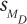.
9.50 Given sD = 12.78 and N = 49, calculate .
Given , finding t
9.51 If M1 = 18, M2 = 14, and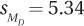 , what is t?
9.52 If M1 = –12, M2 = –15, and 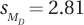 , what is t?
Calculating t
9.53 Given M1 = 25, M2 = 28, N = 5, and sD = 7.00, calculate t.
9.54 Given M1 = –7, M2 = –9, N = 28, and sD = 2.90, calculate t.
Implementing the decision rule
9.55 If t = 2.30 and tcv = ±2.017, (a) draw a sampling distribution of t, marking t and tcv , and label the rare and common zones, then (b) report whether or not the null hypothesis was rejected.
9.56 If t = 1.65 and tcv = ±2.145, (a) draw a sampling distribution of t, marking t and tcv , and labeling the rare and common zones, then (b) report whether or not the null hypothesis was rejected.
Writing results in APA format (use α = .05, two-tailed)
9.57 Given N = 5 and t = 3.211, write the results of this paired-samples t test in APA format.
9.58 Given N = 27 and t = 2.033, write the results of this paired-samples t test in APA format.
9.59 Given N = 69 and t = 1.994, write the results of this paired-samples t test in APA format.
9.60 Given N = 181 and t = 1.981, write the results of this paired-samples t test in APA format.
Determining the direction of the difference
9.61 Given these results, comment on the direction of the difference between the population means: M1 = 72, M2 = 73, t(26) = 2.08, p < .05.
9.62 Given these results, comment on the direction of the difference between the population means: M1 = 17, M2 = 24. t(35) = 2.01, p > .05.
9.63 Given these results, comment on the direction of the difference between the population means: M1 = 50, M2 = 53, t(17) = 1.54, p > .05.
9.64 Given these results, comment on the direction of the difference between the population means: M1 = 28, M2 = 31, t(72) = 7.42, p < .05.
Calculating a confidence interval
9.65 Given the following, calculate the 95% confidence interval for the difference between population means: M1 = 108, M2 = 100, tcv = 2.052, and 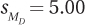.
9.66 Given the following, calculate the 95% confidence interval for the difference between population means: M1 = 40, M2 = 50, tcv = 2.010, and 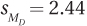.
Interpreting confidence intervals (if necessary, assume the test was two-tailed with α = .05)
9.67 Based on the confidence interval 18.00 to 27.00, decide if the null hypothesis was rejected for the paired-samples t test.
9.68 Based on the confidence interval –0.40 to 0.50, decide if the null hypothesis was rejected for the paired-samples t test.
Interpreting the results of a paired-samples t test
9.69 A sleep therapist wanted to see if an herbal tea advertised as a sleep aid really worked. He located 46 people with sleep problems and matched them into pairs on the basis of (a) how long they had suffered from insomnia, (b) how long it usually took them to go to sleep at night, (c) how much sleep onset anxiety they experienced, and (d) how suggestible they were. He then randomly assigned one person from each pair to drink the tea at bedtime (the experimental group), while the control group went to sleep as they normally did. He used an EEG to measure the minutes to sleep onset (the fewer the minutes to sleep onset, the better). He found MC = 21.20, ME = 19.70, sD = 5.47, 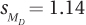, t = 1.32, and 95%CIµDiff = from –3.86 to 0.86. Write a four-point interpretation.
320
9.70 A sportswriter was curious if football teams gained more yards rushing (the control condition) or passing (the experimental condition). She randomly selected nine teams and calculated the mean yards gained per game through rushing (101) and through passing (221). sD was 27.99. She calculated 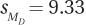, t = 12.86, and 95%CIµDiff = from 98.49 to 141.51. Write a four-point interpretation.
Completing all six steps of hypothesis testing
9.71 A dermatologist compared a new treatment for athlete’s foot (the experimental condition) to the standard treatment (the control condition). He tracked down 30 people with athlete’s foot on both feet and, for each participant, randomly assigned one foot to receive the new treatment and the other foot to receive the standard treatment. After three weeks of treatment, he measured the percentage of reduction in symptoms (the larger the number, the better the outcome). He found ME = 88, MC = 72, and sD = 8.65. Analyze and interpret.
9.72 A college president wanted to know how 10-year-after-graduation salaries for academic majors (English, psychology, math, etc.) compared to salaries for career-oriented majors (business, engineering, computer science, etc.). She matched 84 academic majors at her college with 84 career-oriented majors on the basis of SAT scores and GPA. She found MAcademic = $59,250, MCareer = $61,000, sD = 9,500. Analyze and interpret.
Expand Your Knowledge
9.73 If N = 24 and 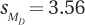, for which situation is the 95% confidence interval for the difference between population means the widest?
MC = 0 and ME = 2
MC = 0 and ME = 5
MC = 0 and ME = 10
MC = 0 and ME = –2
All confidence intervals are equally wide.
Not enough information was presented to answer this question.
9.74 If MC = 5 and ME = 10, for which situation is the 95% confidence interval for the difference between population means the widest?
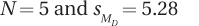
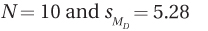
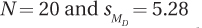
All confidence intervals are equally wide.
Not enough information was presented to answer this question.
9.75 If MC = 51 and ME = 43, for which situation is the 95% confidence interval for the difference between population means the widest?
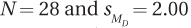
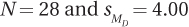
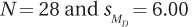
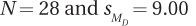
All confidence intervals are equally wide.
Not enough information was presented to answer this question.
9.76 If the 95% confidence interval for the difference between population means ranges from 1.00 to 9.00, what is ME – MC?
9.77 If the 95% confidence interval for the difference between population means ranges from –5.00 to 1.00 and 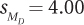, what is t ?
9.78 A nurse at a health clinic wanted to see if its ear thermometers and oral thermometers registered the same body temperatures. She selected six healthy staff members and took their temperatures with both thermometers. Apply the six steps of hypothesis testing to the data collected. Is body temperature measured similarly by ear thermometers and oral thermometers?
| Body Temperature, Measured in °F | ||||||
| Case | 1 | 2 | 3 | 4 | 5 | 6 |
| Ear | 97.8 | 98.6 | 98.9 | 97.9 | 99.0 | 98.2 |
| Oral | 97.4 | 97.9 | 98.3 | 97.4 | 98.1 | 97.7 |
321
When entering data for a paired-samples t test into the data editor in SPSS, each pair of scores is on a row and the two data points are in separate columns. This means that the data for the humidity study would be entered as shown in Figure 9.9. Note that there is no column for a difference score since SPSS will calculate that internally and automatically.
The command for a paired-samples t test, as shown in Figure 9.10, is found under “Analyze” and then “Compare Means.”
The commands for completing the paired-samples t test in SPSS are shown in Figure 9.11.
The SPSS output for the paired-samples t test is shown in Figure 9.12. The first of the three output tables provides descriptive statistics for the two samples. The second table reports the correlation between the two variables. Correlations will be covered in Chapter 13, so ignore this output for now.
The meat of the output appears after the first two tables. SPSS calculated the t value as –8.859, whereas in the chapter discussion it is 8.82. The sign is different because SPSS subtracted the two sample means in a different order. SPSS also carries more decimal places in its calculations, so its answer is more exact.
SPSS reports exact significance levels, seen in the last column of the final table. The value for this t test is .000. This means that if the null hypothesis is true, a result like the one found here, where t = –8.859, is a rare result; it has a probability of less than .001 of occurring. In percentage terms, a result such as this happens less than 0.1% of the time when the null hypothesis is true. The likelihood of a Type I error is very low.
322
For our purposes, if the exact significance value for a test as reported by SPSS is less than or equal to .05, then the null hypothesis is rejected. If the exact significance value for a test is greater than .05, then fail to reject the null hypothesis. Since .001 is less than or equal to .05, the null hypothesis is rejected.
APA format prefers reporting exact significance levels when possible. Here, the exact significance level is reported as .000. APA format would report this as t(5) = –8.86, p ≤ .001.
The final thing to note is that SPSS calculates the 95% confidence interval for the difference between population means. Here, SPSS reports the difference between population means as ranging from –9.676 to –5.324. Again, the sign is different because of the order in which SPSS subtracted one mean from the other. Otherwise, the numbers calculated by SPSS and in the chapter (5.31 to 9.69) differ slightly because of the number of decimal places carried. Again, SPSS offers the more exact answer because it carries more decimal places.